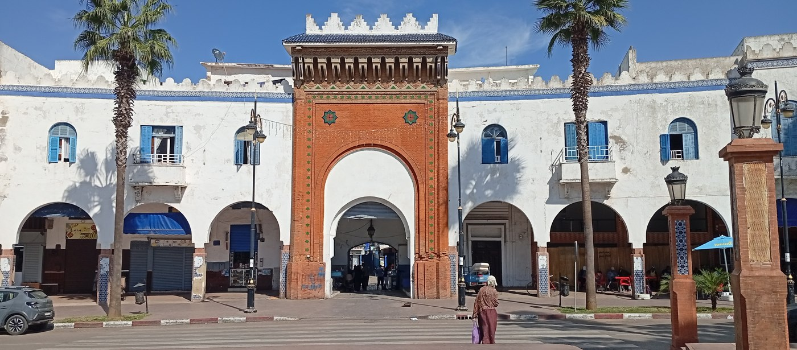

UNE PROMENADE DANS LA MÉDINA
Soco Chico
de Larache
Visite virtuelle 3D
Votre promenade commence devant Bab Lemdina. Franchissez la porte, découvrez les passages et explorez librement le Petit Souk.
Chargement du modèle…
Reconstitution numérique en cours de documentation. Certaines formes et textures sont interprétées.

DÉPART · BAB LEMDINAPhotographie de référence fournie pour le projet